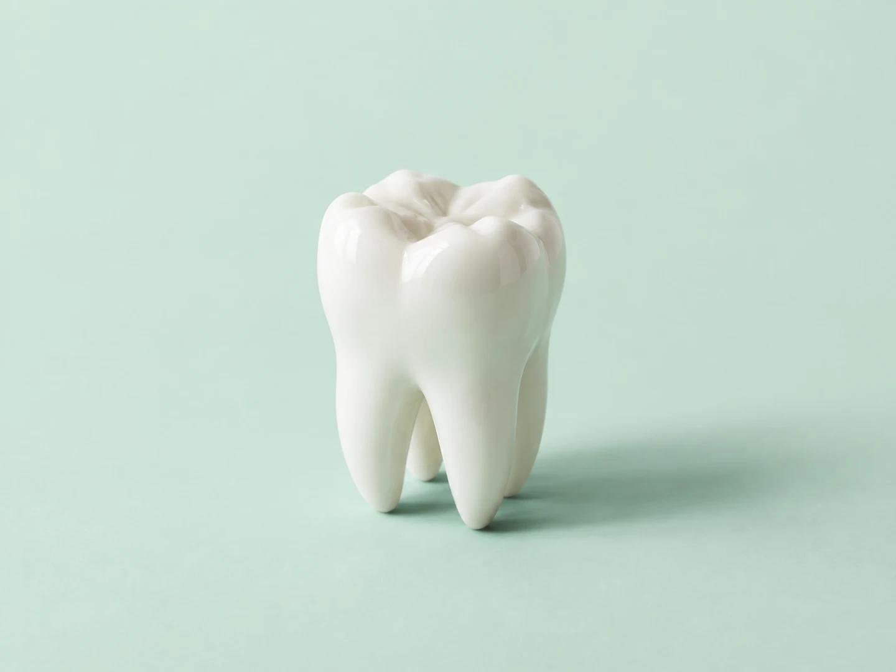
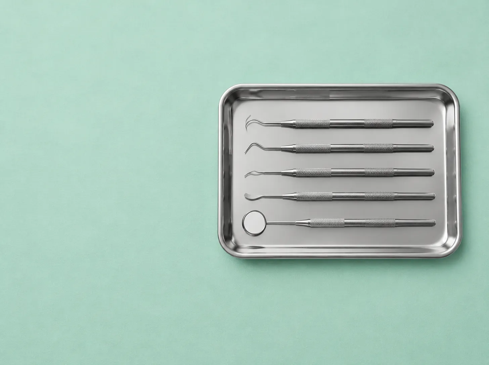
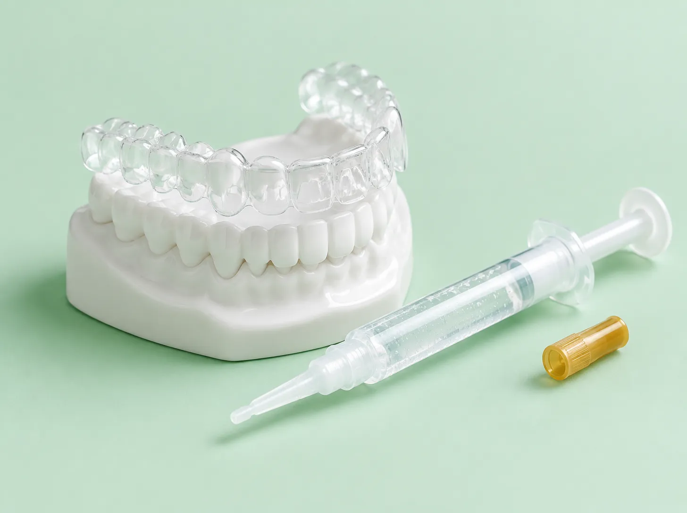
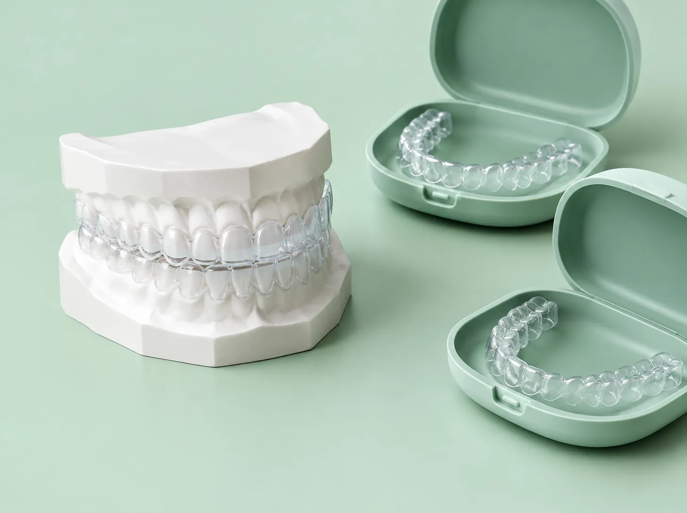
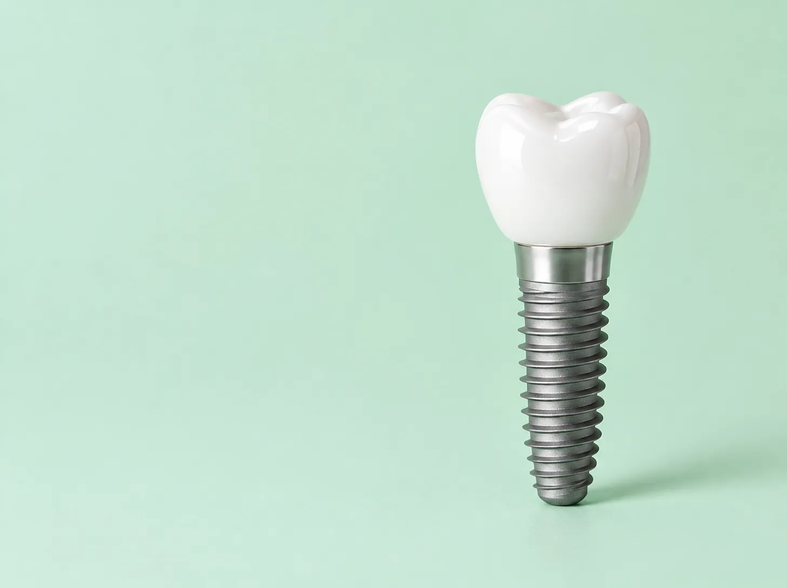

Um sorriso tratado com calma começa com um plano claro.
Somos um consultório odontológico em Cuiabá. Aqui você vê a faixa de preço, o número de sessões e os horários livres antes de marcar. Sem surpresa na cadeira.
Avaliação inicial: 40 minutos, com radiografia e plano por escrito.

serviços
O que fazemos
Seis frentes de trabalho. Toque em qualquer uma para simular a faixa de preço.
-

Avaliação e limpeza
Exame completo, radiografia, remoção de tártaro e polimento. É a porta de entrada de todo tratamento.
Simular limpeza -

Clareamento
No consultório, em duas sessões, ou em casa com moldeira feita sob medida. Explicamos a diferença antes de você escolher.
Simular clareamento -
Restaurações
Resina na cor do seu dente para cáries, trincas e desgastes. Em geral resolvemos até dois dentes por sessão.
Simular restauração -

Alinhadores transparentes
Planejamento digital, placas trocadas a cada duas semanas e consultas curtas de acompanhamento.
Simular alinhadores -

Implantes
Substituição de um ou mais dentes com pino de titânio e coroa de cerâmica, em etapas com intervalo para cicatrizar.
Simular implante -
Tratamento de canal
Quando a dor chega ao nervo. Fazemos com anestesia reforçada e, na maioria dos casos, em uma ou duas sessões.
Simular canal
agenda
Escolha um horário
Escolha um dia no calendário, depois um horário livre e confirme com seu nome. É uma simulação: nada é enviado e nenhuma consulta é marcada de verdade.

Carregando
| dom | seg | ter | qua | qui | sex | sáb |
|---|
Atendemos de segunda a sexta, das 8h às 18h, e sábado pela manhã.
Horários livres
Escolha um dia no calendário.
Meus horários guardados
Esta lista fica só no seu navegador (localStorage) e some se você limpar os dados do site.
simulador
Simule o tratamento
Escolha o tratamento e ajuste os detalhes. Mostramos a faixa de preço, quantas sessões costumam ser necessárias e em quanto tempo. Valores fictícios, só para demonstração.
Faixa de preço estimada
de R$ 180 a R$ 260
à vista
- Sessões
- 1 sessão
- Duração do tratamento
- Mesmo dia
- Tempo na cadeira
- Cerca de 50 minutos
Inclui exame, radiografia e polimento.
Marcar avaliaçãoantes e depois
Antes e depois
Arraste o controle para comparar. Os sorrisos são desenhos estilizados, não fotos de pacientes.
Clareamento em consultório, duas sessões de 45 minutos com intervalo de uma semana.
consultório
Quem atende e onde
Duas dentistas, uma sala de espera silenciosa e estacionamento na porta. Endereço e nomes são fictícios.

Dra. Helena Albuquerque
CRO-MT 00000 (fictício)
Clínica geral e estética. Gosta de explicar cada etapa com o espelho na mão.

Dra. Marina Tavares
CRO-MT 00000 (fictício)
Ortodontia e alinhadores. Faz o planejamento digital na sua frente.

Onde estamos
Rua das Seriemas, 000, sala 4
Jardim das Américas, Cuiabá, MT
Telefone fictício: (65) 0000-0000
Segunda a sexta, 8h às 18h. Sábado, 8h às 12h.
dúvidas
Dúvidas frequentes
Toque em uma pergunta para abrir a resposta.
A avaliação inicial é paga?
Sim, e o valor é abatido do primeiro tratamento que você fizer conosco. Na avaliação você recebe radiografia, exame completo e um plano por escrito com faixa de preço e número de sessões.
Vocês aceitam plano odontológico?
Trabalhamos com reembolso: você paga a consulta, nós emitimos o recibo e a documentação, e você pede o reembolso ao seu plano. Para este site de demonstração, nenhum convênio é real.
Clareamento estraga o dente?
Feito com supervisão, não. Pode haver sensibilidade por alguns dias, que tratamos com gel dessensibilizante. Não indicamos clareamento em gestantes, menores de 16 anos ou dentes com cárie aberta.
Tenho medo de dentista. Como vocês lidam com isso?
Com tempo. A primeira consulta é só conversa e exame, sem procedimento. Explicamos tudo antes, combinamos um sinal com a mão para pausar e usamos anestesia em gel antes da agulha.
Quanto tempo dura um tratamento com alinhadores?
Casos leves, de 6 a 8 meses. Casos moderados, de 10 a 14 meses. Casos complexos podem passar de 18 meses. O planejamento digital mostra a previsão antes de você decidir.
Posso parcelar?
Sim, em até 10 vezes sem juros no cartão. O simulador desta página mostra o valor aproximado de cada parcela.
como funciona
Como este site funciona
Esta página é uma demonstração da Mil e Uma Linhas!. Abaixo explicamos o que ela faz, em três níveis.
Para quem não entende de tecnologia
É um site de consultório que funciona de verdade: você escolhe um dia e um horário, simula quanto custa um tratamento e compara um sorriso antes e depois. Tudo acontece na sua tela. Nada é enviado para ninguém e nenhuma consulta é marcada. Os nomes, os preços e o endereço são inventados.
Como funciona por dentro
O site é um conjunto de três arquivos: um de texto e estrutura (HTML), um de aparência (CSS) e um de comportamento (JavaScript). Quando você abre a página, o navegador lê os três e monta tudo sozinho. O calendário é gerado na hora com a data do seu aparelho. Os horários "ocupados" são sorteados de um jeito fixo para cada dia, então o mesmo dia mostra sempre os mesmos horários. O simulador faz contas simples com uma tabela de valores. Se você confirmar um horário, ele fica guardado só na memória do seu navegador.
Detalhes técnicos
- HTML, CSS e JavaScript puros, sem framework, sem biblioteca, sem CDN e sem analytics.
Content-Security-Policypormeta:default-src 'self', sem script inline, sem estilo inline,connect-src 'none',form-action 'none'.- Fontes variáveis Outfit e Figtree servidas localmente em
fonts/(woff2, subconjunto latino), licença SIL OFL. - Calendário gerado com
Dateno fuso do visitante; disponibilidade pseudoaleatória determinística por hash da data (função simples de 32 bits). - Comparador com
clip-path: inset()controlado por uma variável CSS que oinput type="range"atualiza; o mesmo controle serve mouse, toque e teclado. - Persistência opcional em
localStorage, chavenascente.agendamentos, só depois de o visitante confirmar um horário. - Testes em
tests/site.cjscom Playwright: 1280x900, iPhone 13 e 320 px, verificando console, rolagem horizontal e textos cortados.